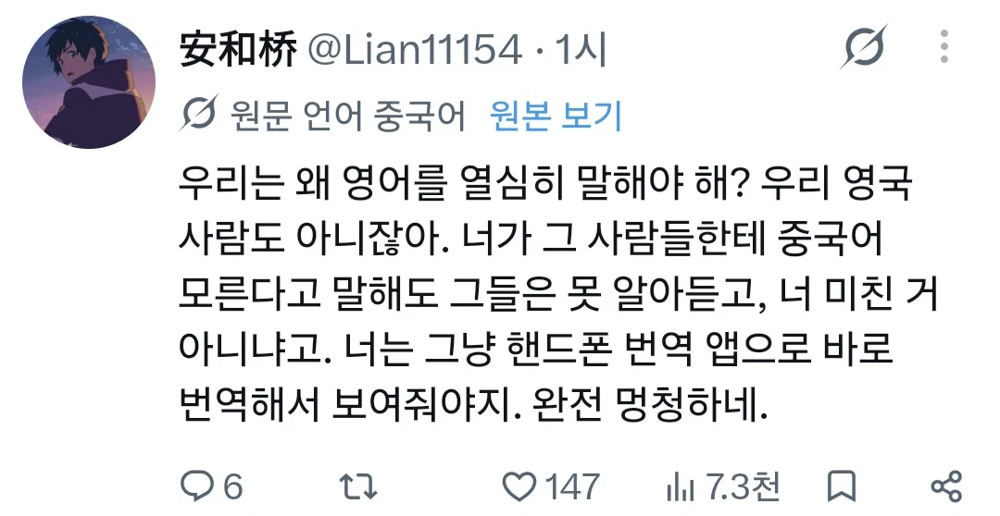

매우 상식적인 한국인의 의문
그에 대답하는 중국인들의 저세상 마인드 ↓

"내가 돈을 내니까 내 언어를 번역하려는 노력은 네가 해야한다."
한국인, 다른 외국인들도 같은 비용을 내는데 본인들만 특별 대우를 받아야 하는 이유는?
매우 상식적인 한국인의 의문
그에 대답하는 중국인들의 저세상 마인드 ↓

"내가 돈을 내니까 내 언어를 번역하려는 노력은 네가 해야한다."
한국인, 다른 외국인들도 같은 비용을 내는데 본인들만 특별 대우를 받아야 하는 이유는?
이게 다 나라가 잘못되어서 그래
대.짱.깨
3개국어자는 시급 300원에 구해지는 나라인가봐
ㅋㅋ 짱들 논리가 무적인게 여행자입장이면 우리가 손님이다 입장이고 반대면 우리나라에 왔으면 니들이 맞춰라임 ㅋㅋㅋ 진짜 다신 가고싶지않은 나라 부동의 1위
저 좆병신들 왜 지들이 화났냐 ㅋㅋㅋ
이건 세상이 잘못한거야 중국인을 박멸하지 못했으니까 업보인것이지
번역기써 시발
저기서 싸우는 양쪽 국가 인원들 특 : 해외여행 못가봄
병신어는 니네나 써
편견이 안생길수가 없어
차오니마
도대체 어떤교육을 하길래 상대에대한 배려같은건 1도없는 저런 놈들을 양산하는거지
근데 짱들도 트위터 할 수 있는거야>?
ㅋㅋ 어 우리도 걍 한국어 쓸게. ㅋㅋㅋㅋ 한국어 쓰는 나라 왔으면 한국어 해야지~ 꼬우면 오지 말든가~
걍 가만히 서서 허? 응? 하면됨 알아서 번역기 꺼내듬
근데내가 장사하는사람이면 중국어배울듯
중국가서 한국어로 조지면 알아서 번역돌려준다 이거지?